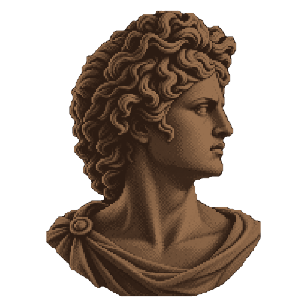
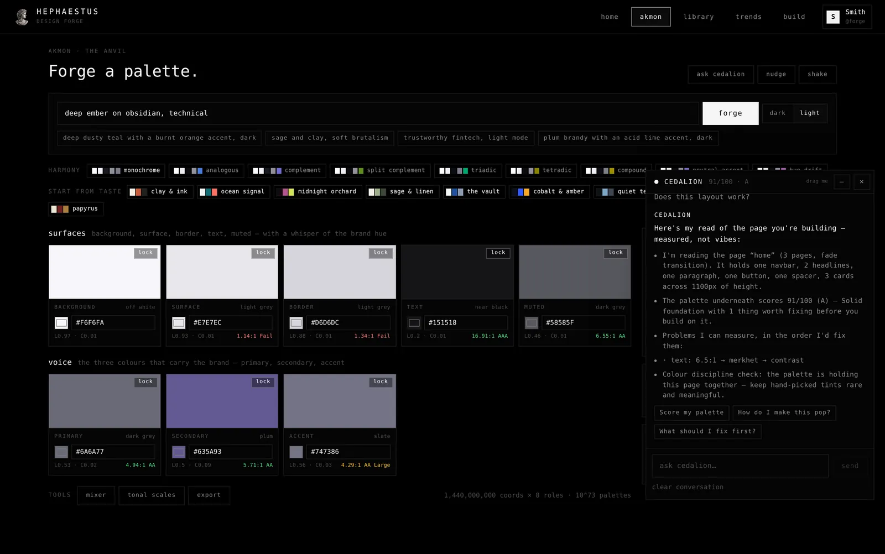
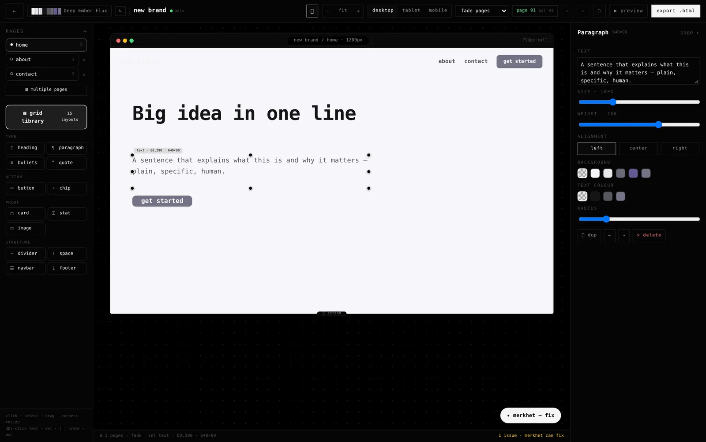
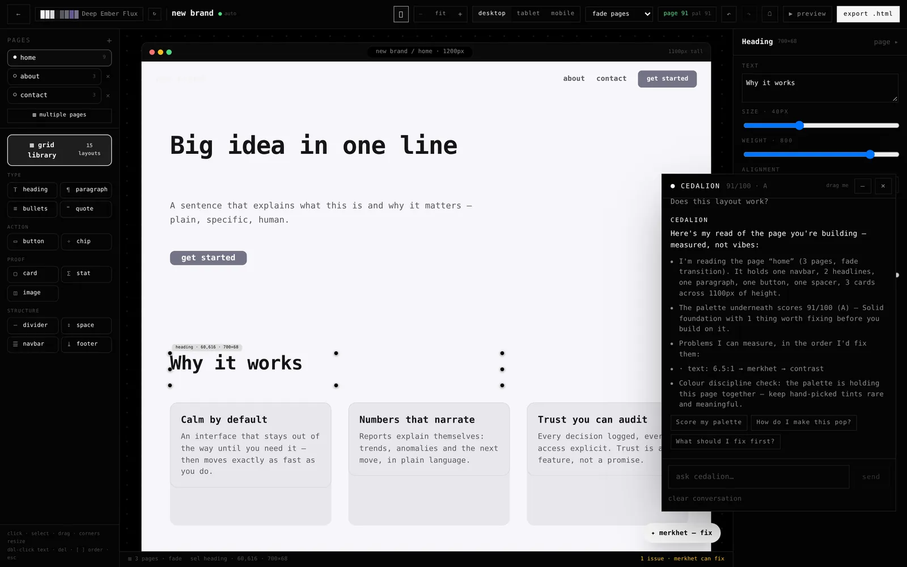

Free desktop app · Windows, macOS, Linux
Design help that
shows its work.
Hephaestus picks your colours, lays out your pages and tells you what's wrong with the result. Every answer comes from rules written in the app — you can read why it made each choice.
- Works offline
- No account
- No AI guessing

Four things, all of them yours
No cloud, no seats, no monthly bill. It's one program on your machine that does the parts of design that are tedious and repeatable.
Colours from a sentence
Type what you want — "calm banking app", "loud poster" — and it builds the whole palette: background, text, accents, borders, states. Contrast is checked while it works, not after.
Layouts that stay tidy
Drop blocks on a canvas and everything keeps its alignment and spacing. Pages, links between pages, and an HTML export when you're done.
A review you can argue with
Point it at a design and it lists what's weak — contrast too low, spacing too tight, too many colours fighting — each with a specific fix. You decide whether to take it.
Places to start
Twenty-one ready directions with colours and type already paired, for the days you'd rather choose than build. Browse them, steal one, keep going.
What it looks like
These are the actual app, not mockups.



What it isn't
Worth saying out loud, because most tools avoid it.
- No AINothing generates your work and nothing sends it anywhere. Rules and measurements instead — which means the same input gives the same answer, every time, and you can look up why.
- No account, no telemetryIt runs offline. Your files stay on your disk. The only network request on this page is the one that reads the latest release from GitHub.
- No subscriptionIt's free, and the code is in the open. Take it, build it, change it.
- Not a Figma replacementIt won't do multiplayer, prototypes or plugins. It's strong at exactly the four things above and quiet about the rest.
Get it
Pick your system. The buttons below fill themselves from the newest release on GitHub, so this page is never out of date.
reading the latest release…
macOS builds aren't signed with a developer certificate yet, so on first launch right-click the app and choose Open. Everything else installs normally.